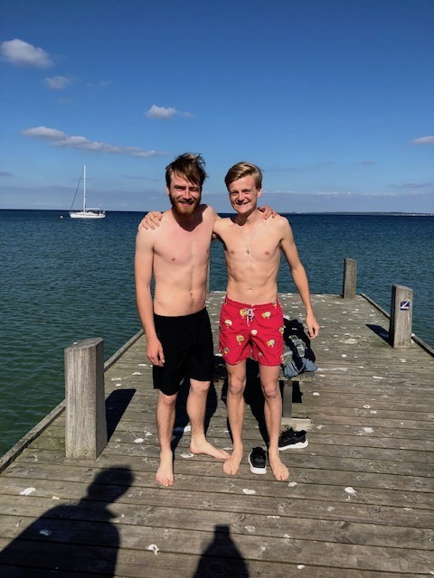
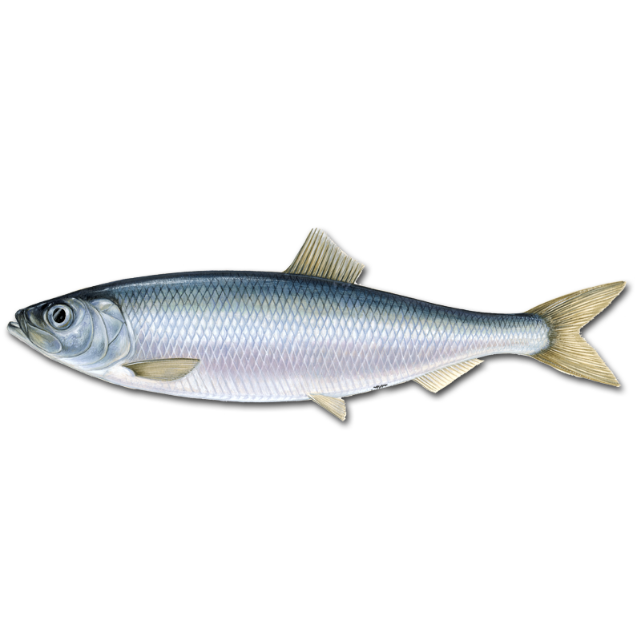
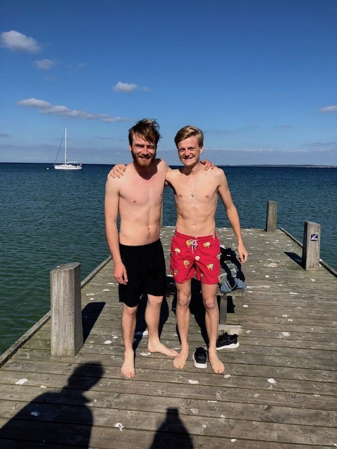
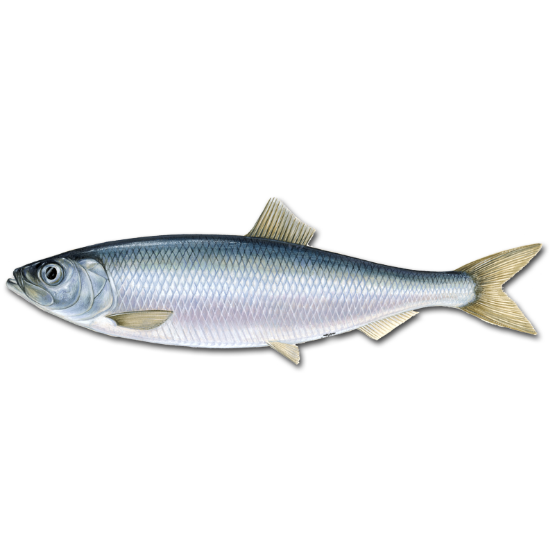

Hej, jeg er George
 



🇩🇰
PRODIGAL DANE
🇩🇰
I'm 23, half Danish, fully English. Living in Copenhagen for the next two months, trying to learn to be a Dane. Join me on my quest to transcend my anglo-saxon upbringing and achieve full hygge.
HOW TO BE DANISH